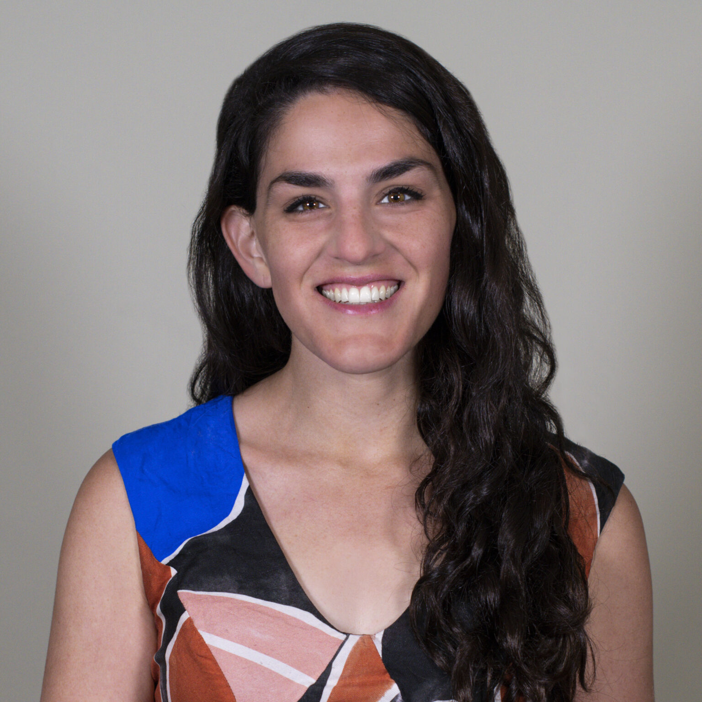
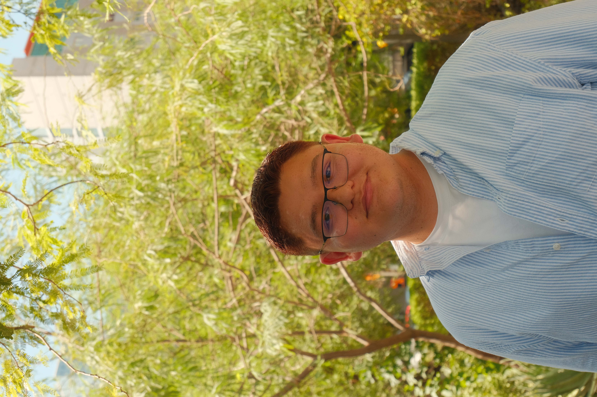
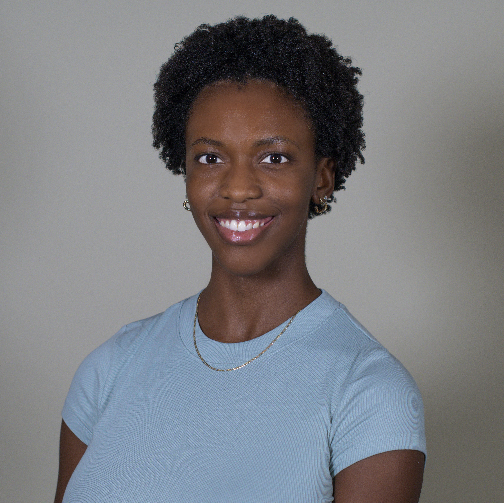
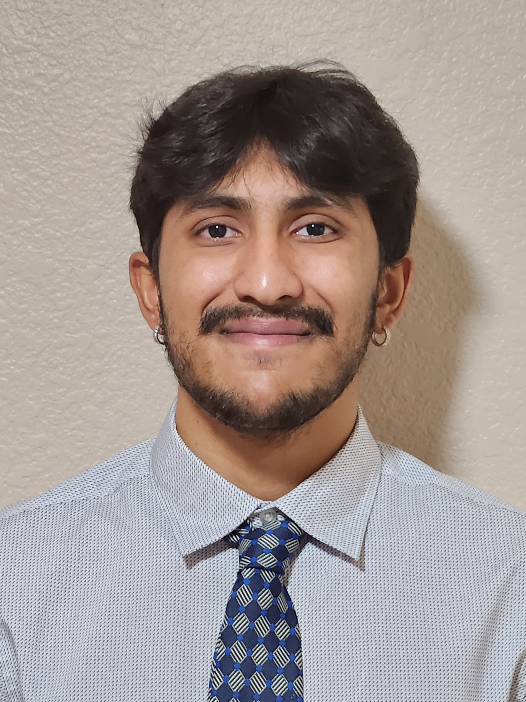
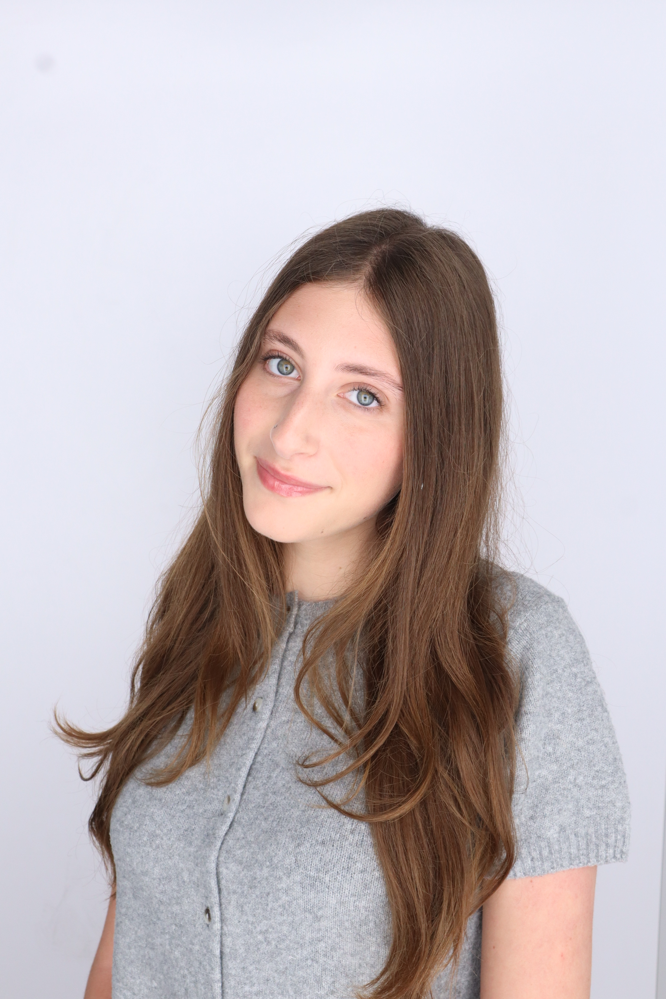
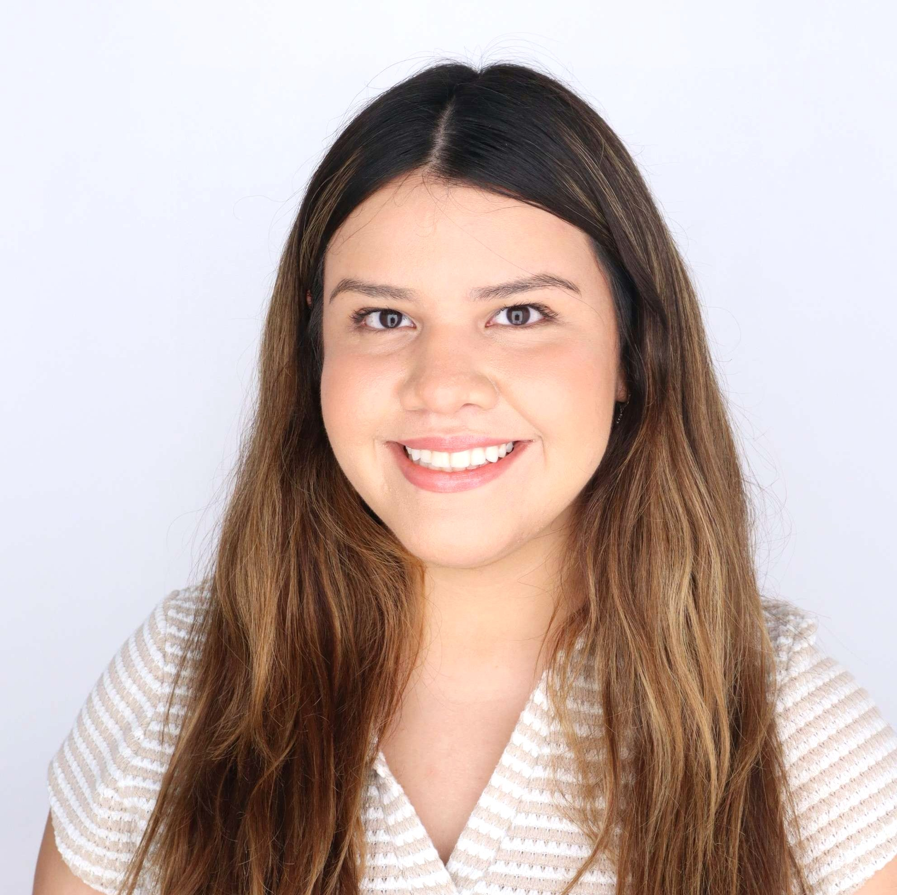
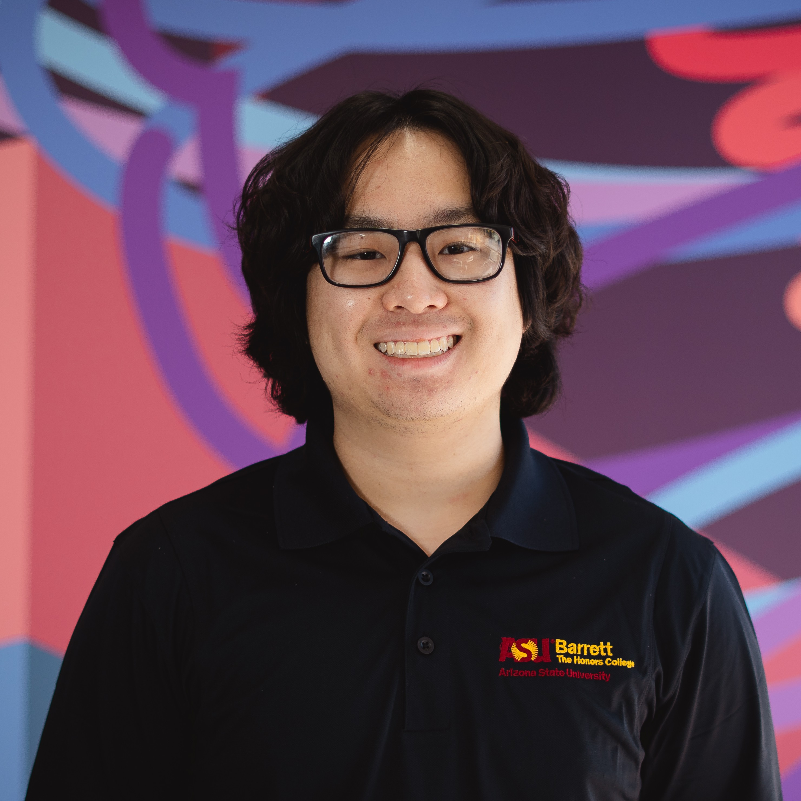

Principal Investigator and Assistant Professor
Rachel Gur-Arie, PhD, MS
Dr. Rachel Gur-Arie is PI of the Public Health Ethics Lab and Assistant Professor at the Edson College of Nursing and Health Innovation at Arizona State University. Her expertise lies at the intersection of ethics, public health and decision-making. She is PI of a Templeton Foundation funded study investigating the relationship between religion and vaccine hesitancy among pre-health students. Since joining ASU, she has led ethics-forward research into healthcare providers' experiences delivering genomic medicine in diverse primary care settings.
View CV (PDF)
Lab Manager
Rodolfo Quijada
Rodolfo is a graduate student at ASU's School of Life Sciences, working on his master's in Computational Life Sciences. He supports faculty research at the Edson College of Nursing and Health Innovation as a Research Specialist. His interests are rooted in his experience working in diabetes prevention, genomic research, and public health research. He hopes to continue expanding his skills and knowledge in research through further education and hands-on experience.
Volunteer Staff
Social Media Manager
Emily Brown
I graduated from Arizona State University in 2025 with a degree in Biological Sciences and originally joined the lab as an undergraduate student during recruitment for the Templeton study. Since graduating, I have expanded my role within the lab by developing our social media presence. I created the lab's branding and merchandise and continue to develop our online presence. I also help connect lab members with community outreach and volunteer opportunities. What I love most about our lab is the passion each member brings to our work. Beyond our research, our lab community is incredibly supportive, and I value being part of an environment where members encourage one another.
Web Developer
Ysabelle Herrera
Team Lead
I recently graduated from Arizona State University with my bachelor's in Biomedical Sciences. I currently serve as one of the team leads and the web developer of this lab. I joined this lab as an undergraduate researcher because I was fascinated by the research on religious values and its effect on public opinion on vaccines. The Public Health Ethics lab has given me the opportunity to grow my qualitative and quantitative analytical skills, and has made me more aware of public health affairs that affect our daily lives. My favorite part of lab were the weekly debriefs and Einstein bagels. I love to try new restaurants and cafes, play the piano and draw during my free time.
Current Lab Members
Graduate Researchers

PhD Student
Eboni Andersun
Hi! I'm Eboni, a fourth year PhD candidate. I joined the PHE lab to collaborate with like minded individuals to investigate the ethical concerns that arise in a rapidly changing public health landscape. In my free time I love to go to fitness class, solve puzzles, and read thrillers.

Master's Student
Jenny Lebeau
[Add bio]

Master's Student
Advik Venkatesh
I am pursuing a one-year master's degree in public health technology. I joined the PHE lab to analyze how vaccine hesitancy can shape public health outcomes and to gain additional qualitative research experience. This is my first semester in the lab, but I am very excited to be here! Outside of academics, I enjoy working out, watching movies, and learning guitar.
Undergraduate Researchers
Spring 2025
Amy Senkerik
Team Lead
I am a senior majoring in Biology & Society and in Global Health. I currently serve as one of the team leads of this lab. I joined the PHE lab to better understand bioethics and vaccine hesitancy! In my free time, I like to run and spend time with friends and family. My favorite part of lab was our end-of-semester pickleball social.
Spring 2025
Raiden Zorilla
I am currently a Senior graduating in the spring semester. I joined the PHE lab in 2024 because I took a similar class during sophomore year hoping to expand my knowledge on the subject and to be able to contribute to meaningful research. In my free time, I like watching TV shows and movies. I also love playing sports such as basketball, bowling, and bouldering. My favorite memory at the lab has been the get-togethers at the end of the year with our whole group.
.jpg)
Fall 2025
Lily Dang
I'm currently a senior studying Microbiology and Community Health, and I enjoy reading and café hopping in my free time. I joined the PHE Lab at the start of my junior year because I was particularly interested in the intersection of ethics and vaccine hesitancy within my own pre-health community here at ASU. My favorite memory of the lab was our semester wrap-up at Lydia's brunch, getting to revisit memories and accomplishments over delicious food!

Spring 2026
Yahli Harel
My name is Yahli Harel, and I am a third-year student graduating in May 2027. I joined the PHE lab because I am incredibly interested in public health and how people's values shape vaccine hesitancy. In my free time, I enjoy reading, listening to music, and playing guitar. My favorite lab memory is playing pickleball for our end-of-semester social last semester!

Spring 2026
Aylette Trahin
Hello my name is Aylette Trahin and I'm currently a junior majoring in Public Health. I joined the PHE lab because I wanted to learn more about public health research. During my free time I love to bake and spend time with my friends. My favorite lab memory was participating in the SOLUR Symposium last spring, it was my first time participating in a research event!

Fall 2026
Rachel Lee
Hello! My name is Rachel, and I am currently a sophomore Barrett biomedical sciences student! I decided to join the PHE Lab after hearing about it through the Barrett College Fellows research program, and the description of the project influenced me to apply! In my free time, I enjoy scrapbooking with my large collection of stickers!
Fall 2026
Caleb Rubio
I'm a junior Medical Studies student. I joined the lab because I have personally seen vaccine hesitancy firsthand while working in a hospital, which sparked my interest in the topic. In my free time, I love to go off-road, window shop, and play video games.

Fall 2026
Stanley Zhang
I am an undergraduate student studying Kinesiology at Arizona State University. I am currently in my fourth year, pursuing a master's in Clinical Exercise Physiology, and serving as a student leader for Barrett, The Honors College, where I work with the student engagement team at the Downtown Campus. I am also an instructional aide for the anatomy and physiology lab. I joined the PHE Lab to learn more about how ethics affect healthcare and how ethical decisions shape patient care and the healthcare system. In my free time, I enjoy hanging out with friends, playing pickleball and basketball, and exploring new places.
Lab Alumni
Undergraduate Researchers
Lila Fuller (Spring 2025 - Spring 2026)
Pre-Dental Student at Barrett, the Honors College at Arizona State University
Maryam Khona (Spring 2025 - Fall 2025)
MPAS Student (Physician Assistant) at Creighton University - Phoenix
Hannah Block (Fall 2025)
MPH (Master's in Public Health) Student at South College, Tennessee
Ryan Divis (Fall 2025)
Nursing Student at Arizona State University
Ilani Higgins (Spring 2025)
MD (Doctor of Medicine) Student at St. George's University, Grenada